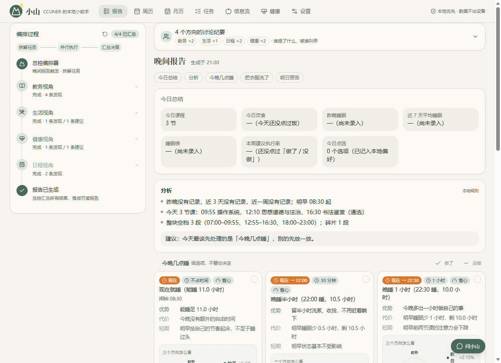
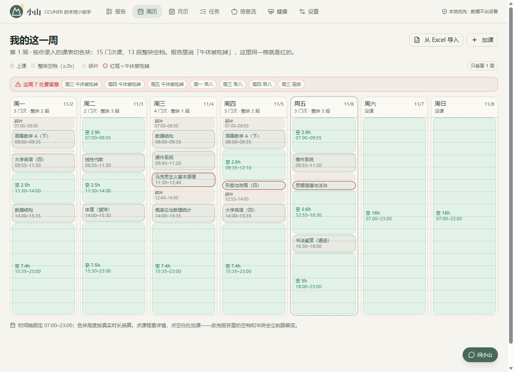

01
问题
Why it matters
信息散落，没人替你过滤
教务通知、讲座、生活服务分散在群聊与公众号，没有按你的年级、校区、空闲时段筛过。
选择很累，代价从没写清
午饭吃什么、今晚复习还是早睡，通用助手只给一句结论，不说它牺牲了什么。
云端助手，先交数据再谈服务
课表、作息、健康是敏感信息。上传换取建议，且过程是黑盒。
02
方案：可解释的多智能体编排
How it works
教务ACADEMIC
生活LIFE
健康HEALTH
日程SCHEDULE
总控编排器 · 冲突仲裁
- 各司其职：4 个 Agent 只读自己那部分数据，独立产出结论，互不串联污染。
- 每条建议可溯源：点「为什么」展开依据——哪个 Agent、哪条数据、权重多少。
- 冲突不折中：L1 可调和的自动合并并说明；L2 真冲突弹卡，两边代价写清，由你二选一，系统记住裁决。
- 场景会变：考前 7 天自动切冲刺模式，同一份「昨晚睡 5.5h」平时是小憩建议、考前夜是红线警告。
03
创新点
What is new
01
编排过程是可见的
报告左侧实时事件流：拆任务 → 4 Agent 并行 → 冲突检出 → 汇总成卡。不是「AI 想了想」，而是每一步都留痕。
02
本地优先，不是云优先
课表、睡眠、偏好全部落在浏览器 IndexedDB，无后端、无账号；断网刷新，三个主路由照常打开。
03
选项卡 = 决策模拟
每条建议 2–3 张卡，写明优势、代价与短期/长期影响，把决策成本降下来，而不是替人做决定。

